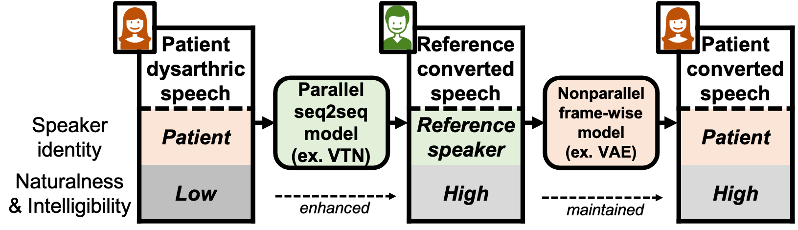

Abstract: We propose a new paradigm for maintaining speaker identity in dysarthric voice conversion (DVC). The poor quality of dysathric speech can be greatly improved by statistical VC, but as normal speech utterances of the dysarthria patients are nearly impossible to collect, previous work failed to recover the individuality of the patient. In light of this, we suggest a novel, two-stage approach for DVC, which is highly flexible in that no normal speech of the patient is required. First, a powerful parallel sequence-to-sequence model converts the input dysarthric speech into a normal speech of a reference speaker as an intermediate product, and a nonparallel, frame-wise VC model realized with a variational autoencoder then converts the speaker identity of the reference speech back to that of the patient while assumed to be capable of preserving the enhanced quality. We provide several design choice investigation and experimental evaluation results, demonstrating the potential of our approach to improve the quality of the dysarthric speech while maintaining the speaker identity.
Proposed method

Dataset
A female patient's voice was used as the source, and the data of the reference speakers are from TMSV.
Speech Samples
Transcription: 他今天覺得頭昏沉沉的 (ta jin tian jue de tou hun chen chen de)
Description
SP04
SP09
SP07
SP13
Dysarthric
TMSV
VTN
VTN+VAE
Transcription: 我們中秋節一起去賞月 (wo men zhong qiu jie yi qi qu shang yue)
Description
SP04
SP09
SP07
SP13
Dysarthric
TMSV
VTN
VTN+VAE
Transcription: 他手上戴了一只玉手環 (ta shou shang dai le yi zhi yu shou huan)